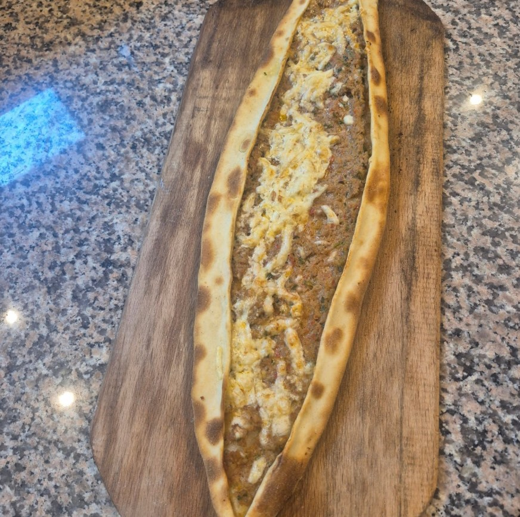
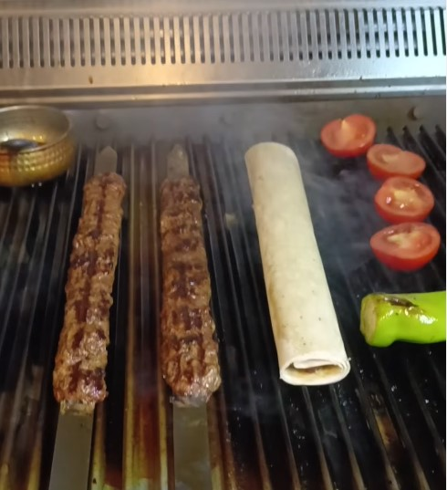
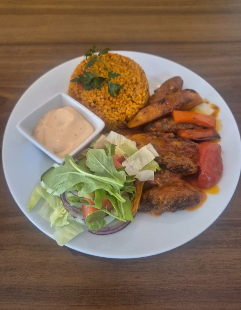
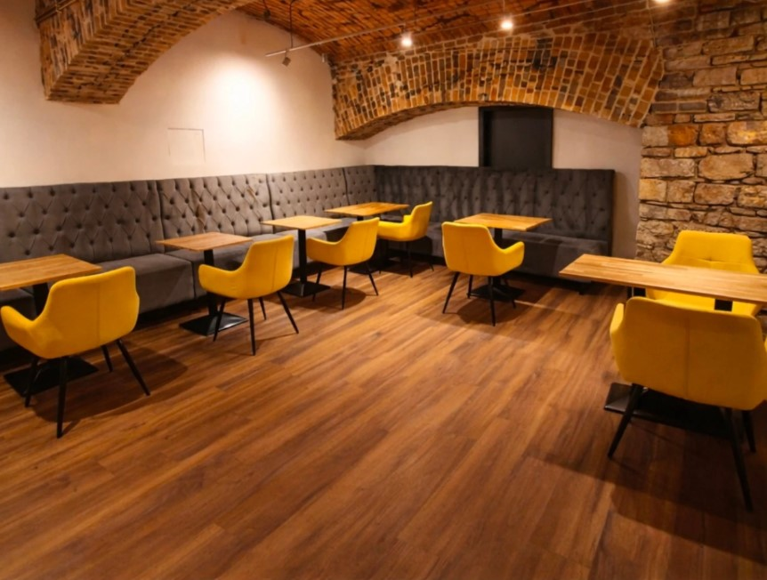
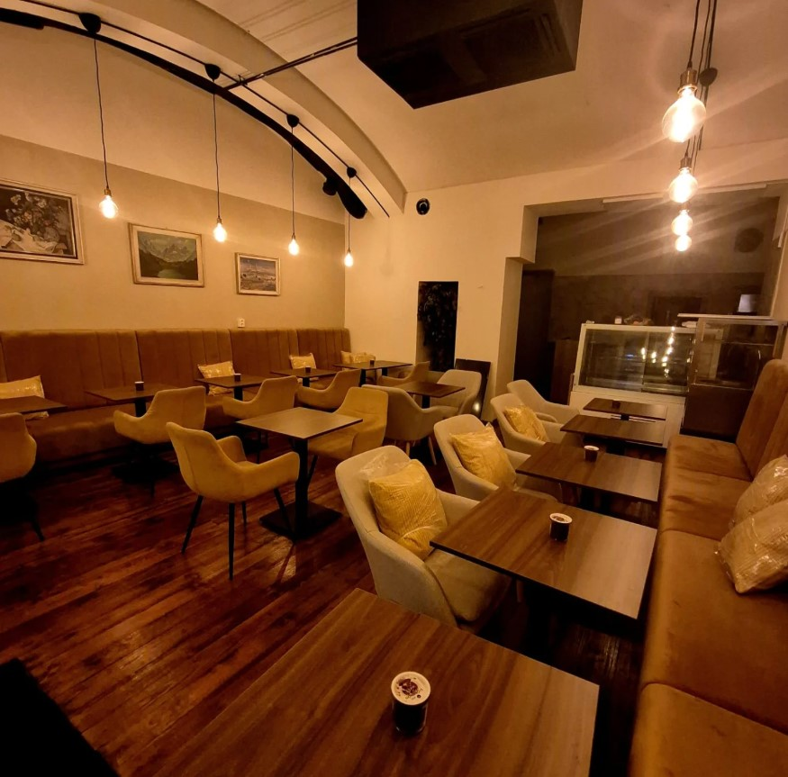

Lahmacun
Crispy thin-dough Turkish flatbread topped with spiced minced meat, fresh tomatoes, and herbs. Roll it up and take a bite of Istanbul.
Authentic Turkish Kitchen Prague
Homemade recipes, traditional culture, and the warmth of Istanbul — brought to the streets of Prague.

Homemade Daily
Fresh Ingredients
Traditional Recipes
Prague City CentreOur Story
Divan was born from a simple belief — that the best Turkish food isn't found in fancy restaurants, but in someone's home. We brought that home to Prague.
Read Our Story
From the Kitchen
Every dish is made fresh, every day — from recipes passed down through generations.
Crispy thin-dough Turkish flatbread topped with spiced minced meat, fresh tomatoes, and herbs. Roll it up and take a bite of Istanbul.
Stone-baked bread boat generously filled with seasoned meat and melted cheese. Turkey's answer to comfort food.
Tender grilled meatballs slow-cooked with roasted peppers, tomatoes, and bulgur rice. A hearty classic from the Aegean coast.
Location
Address
Václavské náměstí 12
Prague 1, Czech Republic
Opening Hours
Open daily · 11:00 – 22:00
Reservations